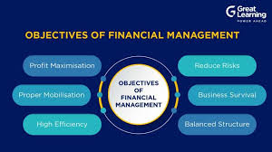

MANAGEMENT FINANCE

what You know About Finance Management ??
Finance management (or financial management) refers to the strategic planning, organizing, directing, and controlling of financial activities within an organization. It involves managing funds efficiently to achieve business goals while ensuring profitability, liquidity, and sustainability.
### **Key Aspects of Financial Management in a Passage:**
If you provide a passage, I can extract and explain financial management details, such as:
1. **Financial Planning Budgeting, forecasting, and setting financial goals.
2. **Investment Decisions Capital budgeting, project evaluation (NPV, IRR).
3. **Financing Decisions Debt vs. equity, cost of capital, leverage.
4. **Working Capital Management Cash flow, inventory, receivables, payables.
5. **Risk Management Hedging, insurance, diversification.
6. **Profit Distribution Dividend policy, retained earnings.
7. **Financial Reporting & Analysis Balance sheets, income statements, ratio analysis.
Example from a Hypothetical Passage
ABC Corp. improved its financial management by optimizing working capital, reducing debt through equity financing, and using NPV models for project selection. This enhanced liquidity and shareholder value."*
Extracted Financial Management Info
Working Capital Optimization (efficient cash/inventory management).
Capital Structure Decision (reducing debt, raising equity).
Capital Budgeting (NPV for project selection).
Shareholder Value Focus (profitability & returns).
Let me know if you have a specific passage you'd like analyzed
efers to planning, acquiring, utilisation and controlling of financial resources/activities. It deals with investment decisions, financing decisions, dividend decisions, liquidity decisions, budgetary control etc.
Chapter 1 : Introduction, Nature and scope of Financial Management What is this financial management?
Financial management is strategic planning, organising, directing, and controlling of financial undertakings in an organisation or an institute.
It also includes applying management principles to the financial assets of an organisation, while also playing an important part in fiscal management.
Road Map For Finance management
Financial management is all about monitoring, controlling, protecting, and reporting on a company's financial resources. Companies have accountants or finance teams responsible for managing their finances, including all bank transactions, loans, debts, investments, and other sources of funding
NOTES ADDED